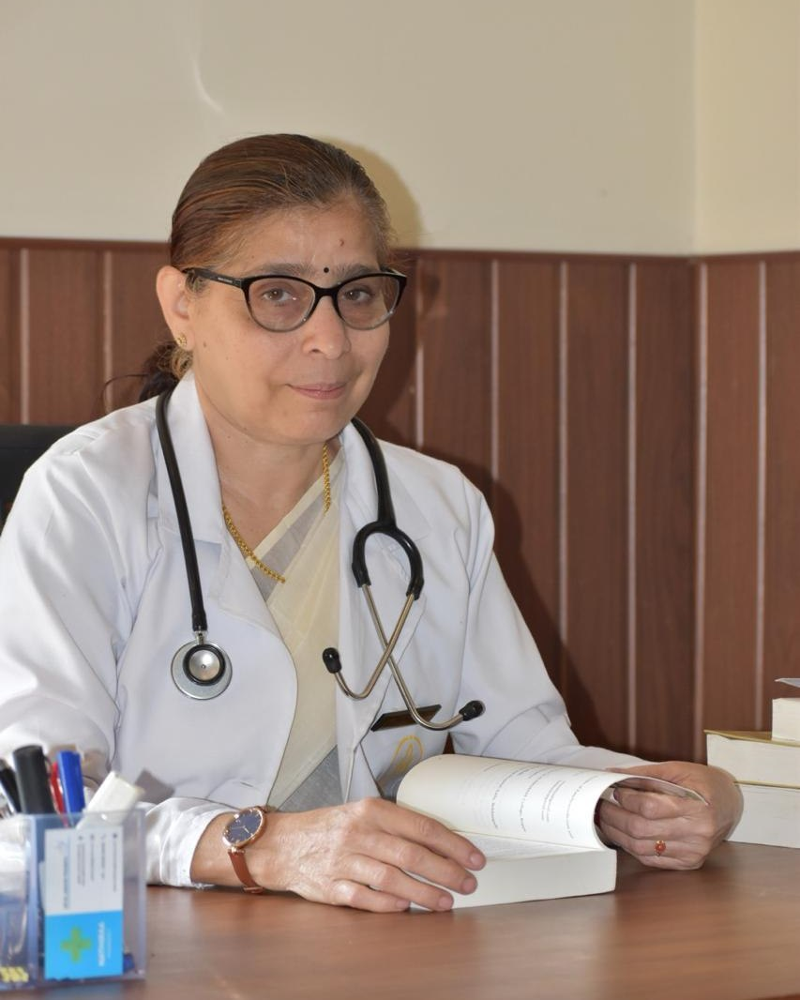
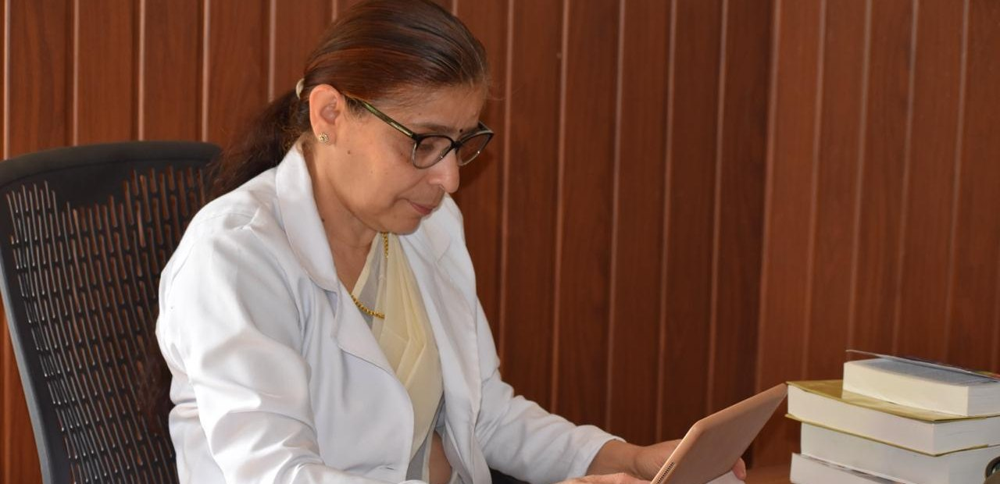

General Ayurvedic consultation
Assessment of prakriti, dosha balance and agni, with a treatment plan tailored to your constitution and complaint.
Online consultations worldwide · Practising since 1989
Thirty-five years of classical Ayurvedic practice across Kerala, Bahrain and Oman - treating the whole person, with remedies and routines that fit the life you actually live. Consult her directly on WhatsApp from anywhere in the world, or in person at Vayas Holistic Ayurveda Centre, Attappadi.
Online on WhatsApp, anywhere in the world · In person at Vayas Holistic Ayurveda Centre, Attappadi

About
Dr. Premalatha A. K. has practised Ayurveda for more than thirty-five years. She graduated with a BAMS from Vaidyaratnam P. S. Varier Ayurveda College, Kottakkal - one of Kerala's foremost Ayurvedic institutions - under the University of Calicut in 1988, and began clinical work the following year with a rural health project run jointly by the AVR Educational Foundation of Ayurveda, Coimbatore and the Ministry of Health and Family Welfare.
Her career since has moved between government dispensaries, established Ayurvedic institutions and international practice: twelve years as a physician with Nagarjuna Herbal Concentrates, Medical Officer posts under the District Medical Office, Palakkad, and seven years as a family physician at Kottakkal Ayurvedic Centres in Bahrain and Oman - where she treated patients from many countries and cultures.
She is currently Chief Consultant at Vayas Holistic Ayurveda Centre, Attappadi. Her approach is classical and unhurried: a careful history, examination of prakriti and dosha balance, and a treatment plan combining internal medicines, Panchakarma therapies if your condition calls for them, and practical changes to diet and daily routine.
Treatments
Classical Ayurvedic assessment and treatment - internal medicines, Panchakarma therapies and guidance on diet and daily routine.
Assessment of prakriti, dosha balance and agni, with a treatment plan tailored to your constitution and complaint.
Supervised cleansing and rejuvenation programmes, chosen to suit your constitution and complaint - if your condition calls for it.
Arthritis, Sandhivata, back and neck pain, sciatica and frozen shoulder - with external therapies if your condition calls for them.
Acidity, IBS, constipation, obesity, diabetes and cholesterol - managed through medicines, diet and routine.
Menstrual irregularities, PCOS, fertility support, pregnancy care and menopausal wellbeing.
Anxiety, insomnia, chronic fatigue and migraine - managed through restorative care, medicines and daily routine.
Experience
Vayas Holistic Ayurveda Centre, Attappadi, Palakkad
New Alma Ayurvedic Centre, Mannarkkad - Vaidyaratnam Oushadhasala Pvt. Ltd., Thrissur
Kottakkal Ayurvedic Centre, Sohar, Sultanate of Oman
Kottakkal Ayurvedic Centre, Juffair, Bahrain
Government Ayurvedic Dispensaries, Puthunagaram & Paloor - District Medical Office, Palakkad
Nagarjuna Herbal Concentrates Ltd., across its agencies
Comprehensive Rural Health Project - AVR Educational Foundation of Ayurveda, Coimbatore, with the Ministry of Health and Family Welfare, Government of India

Consultation
Choose a slot on the booking page and fill in your name, age, city and what is troubling you.
Your booking arrives on her WhatsApp already written out. She confirms the time personally, and will offer the nearest free slot if yours has gone.
The payment details appear once you have chosen your slot - Google Pay or UPI within India, PayPal, Wise or bank transfer from abroad. Send the screenshot on WhatsApp.
A detailed history and discussion of your constitution - usually 30-45 minutes for a first consultation.
Your prescription, diet and daily routine come back on WhatsApp in writing, with a follow-up date. Questions in between are welcome.
FAQ
Use the booking page: choose a time that suits you, fill in a few details, and your booking goes straight to her WhatsApp for confirmation. If you would rather just talk first, message +91 96450 13429.
Yes - she treated patients in Bahrain and Oman for seven years and consults regularly for people abroad. Consultations happen over WhatsApp voice or video and prescriptions come back in writing, in English, Malayalam, Tamil, Hindi or Arabic.
Tell her your city when you message and the appointment will be set at a reasonable hour for you. Evening slots India time suit Europe and the Gulf; early mornings India time suit the Americas.
By PayPal, Wise or international bank transfer - the details are sent on WhatsApp once your slot is confirmed. Google Pay and UPI only work for patients paying from within India.
Your prescription names the classical formulations, which most Ayurvedic pharmacies abroad stock or can order. Where something is hard to find, she will suggest an equivalent that is available to you.
Any lab reports, scans or discharge summaries from the last two years, and all medicines you currently take, including Ayurvedic preparations and supplements.
In most cases yes. Bring the full list and it will be discussed at your consultation. Never stop a prescribed medicine without talking to the doctor who prescribed it.
It depends on the condition. Acute complaints often settle within days; chronic conditions are usually reviewed over weeks to months, with follow-ups along the way.
Panchakarma is a supervised programme of cleansing and rejuvenation therapies. She recommends it only if your condition calls for it, and it usually runs over several consecutive days with preparation beforehand.
No. For chest pain, breathlessness, stroke symptoms, severe bleeding, serious injury or loss of consciousness, go to the nearest emergency department immediately.
Contact
WhatsApp is the quickest way to reach Dr. Premalatha directly - for a new consultation, a follow-up, or a question about your prescription.
Chat, voice call or video call on WhatsApp - the same consultation, wherever you are. Send your reports in advance and she will have read them before you speak.
Please don't send emergency cases over WhatsApp - go to the nearest hospital.